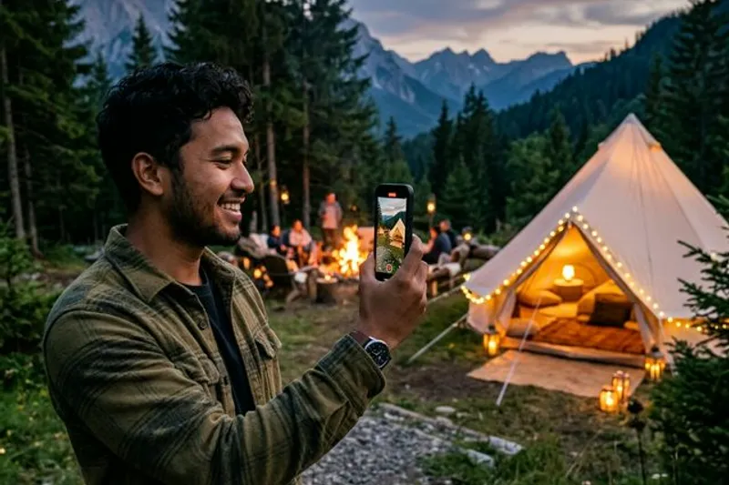

Corporate gathering membutuhkan dokumentasi profesional agar seluruh rangkaian acara dapat dijadikan bukti pelaksanaan yang kredibel untuk laporan internal, sekaligus bahan evaluasi dan komunikasi kepada manajemen perusahaan.
Ringkasan Inti
- Corporate gathering mencakup berbagai acara internal seperti outbound, gathering tahunan, dan team building.
- Dokumentasi profesional membantu perusahaan menyusun laporan internal yang lebih kredibel dan terstruktur.
- Video outbound perusahaan dapat dimanfaatkan sebagai bahan evaluasi maupun komunikasi internal.
- Dokumentasi yang baik membutuhkan perencanaan sejak sebelum acara berlangsung, bukan hanya saat hari pelaksanaan.
- Pemilihan jasa dokumentasi sebaiknya mempertimbangkan pengalaman, portofolio, dan kesesuaian kebutuhan acara.
1. Apa Itu Corporate Gathering dan Mengapa Perlu Didokumentasikan?
Corporate gathering adalah acara yang diselenggarakan perusahaan untuk mempertemukan karyawan dalam suasana di luar kegiatan kerja rutin, seperti outbound, family gathering, atau acara tahunan perusahaan. Dokumentasi diperlukan agar seluruh rangkaian acara memiliki bukti pelaksanaan yang dapat digunakan untuk berbagai keperluan internal.
Tanpa dokumentasi yang memadai, perusahaan berisiko kesulitan menyusun laporan pertanggungjawaban acara, terutama bagi divisi yang memerlukan bukti kegiatan sebagai bagian dari evaluasi anggaran atau program kerja tahunan.
2. Untuk Siapa Dokumentasi Corporate Gathering Ini Penting?
Dokumentasi corporate gathering penting bagi tim HR, event organizer internal, dan manajemen perusahaan yang bertanggung jawab menyusun laporan kegiatan serta mengevaluasi efektivitas program yang telah dijalankan. Ketiga pihak ini umumnya memerlukan bukti visual sebagai pelengkap laporan tertulis.
Selain pihak internal perusahaan, dokumentasi juga bermanfaat bagi divisi komunikasi atau marketing yang ingin memanfaatkan momen acara sebagai bahan konten media sosial maupun materi employer branding perusahaan kepada calon karyawan.
3. Mengapa Dokumentasi Profesional Penting untuk Laporan Internal?
Dokumentasi profesional penting untuk laporan internal karena memberikan bukti visual yang lebih kredibel dan terstruktur dibanding hanya mengandalkan foto atau video seadanya dari peserta acara. Hasil dokumentasi yang rapi memudahkan tim penyusun laporan menyampaikan gambaran acara secara jelas kepada manajemen.
Laporan internal yang dilengkapi dokumentasi profesional juga cenderung lebih mudah dipahami oleh pihak yang tidak hadir langsung di acara tersebut, sehingga mempermudah proses evaluasi maupun pengambilan keputusan terkait kelanjutan program serupa di masa mendatang.

4. Apa Manfaat Video Outbound Perusahaan bagi Internal Perusahaan?
Manfaat video outbound perusahaan bagi internal perusahaan meliputi dokumentasi visual yang dapat digunakan sebagai bahan evaluasi kegiatan, materi komunikasi internal, hingga referensi untuk perencanaan acara serupa di kemudian hari.
Video outbound perusahaan yang disusun secara rapi juga dapat menjadi sarana apresiasi bagi karyawan yang berpartisipasi, karena momen kebersamaan selama acara dapat ditampilkan kembali dalam berbagai kesempatan, seperti town hall meeting atau acara penghargaan tahunan perusahaan.
5. Bagaimana Cara Memilih Jasa Dokumentasi Outbound yang Tepat?
Cara memilih jasa dokumentasi outbound yang tepat adalah dengan mempertimbangkan pengalaman tim dokumentasi dalam menangani acara korporat, portofolio hasil kerja sebelumnya, serta kesesuaian gaya dokumentasi dengan kebutuhan laporan internal perusahaan.
Perusahaan disarankan meminta contoh hasil dokumentasi outbound sebelumnya dari penyedia jasa, guna memastikan kualitas gambar, kejelasan narasi visual, serta kemampuan tim dalam menangkap momen penting selama acara berlangsung tanpa mengganggu jalannya kegiatan.
6. Apa Manfaat Utama Dokumentasi Profesional dalam Corporate Gathering?
Manfaat utama dokumentasi profesional dalam corporate gathering adalah tersedianya bukti pelaksanaan acara yang kredibel, mendukung transparansi laporan internal, serta dapat dimanfaatkan kembali untuk kebutuhan komunikasi maupun evaluasi program.
Manfaat lain yang umum dirasakan perusahaan:
- Laporan pertanggungjawaban acara menjadi lebih lengkap dengan bukti visual yang jelas.
- Video outbound perusahaan dapat digunakan sebagai materi employer branding di berbagai kanal komunikasi.
- Dokumentasi membantu tim HR mengevaluasi tingkat partisipasi dan antusiasme karyawan selama acara.
- Hasil dokumentasi dapat menjadi arsip perusahaan untuk referensi acara serupa di masa mendatang.
7. Bagaimana Prosedur Umum Dokumentasi Corporate Gathering Dilakukan?
Prosedur umum dokumentasi corporate gathering dimulai dari perencanaan konsep dokumentasi sebelum acara, koordinasi dengan tim penyelenggara mengenai rundown kegiatan, hingga proses pengambilan gambar dan video selama acara berlangsung.
Setelah acara selesai, tim dokumentasi biasanya melanjutkan proses editing untuk menyusun hasil akhir berupa foto terpilih dan video outbound perusahaan yang siap digunakan sebagai bahan laporan internal maupun keperluan komunikasi lainnya.
8. Apa Faktor yang Memengaruhi Biaya Dokumentasi Corporate Gathering?
Faktor yang memengaruhi biaya dokumentasi corporate gathering meliputi durasi acara, jumlah tim dokumentasi yang diperlukan, kompleksitas lokasi, serta kebutuhan tambahan seperti drone atau peralatan khusus untuk pengambilan gambar tertentu.
Perusahaan sebaiknya mendiskusikan kebutuhan dokumentasi secara rinci dengan penyedia jasa sejak awal, agar estimasi biaya dapat disesuaikan dengan skala acara dan hasil akhir yang diharapkan tanpa mengorbankan kualitas dokumentasi yang dibutuhkan untuk laporan internal.
9. Apa Kesalahan Umum dalam Dokumentasi Acara Corporate Gathering?
Kesalahan umum yang sering terjadi adalah tidak melakukan koordinasi rundown acara dengan tim dokumentasi sebelumnya, sehingga momen penting berisiko terlewat karena tim dokumentasi tidak mengetahui jadwal kegiatan secara detail.
Kesalahan lain yang juga umum ditemui:
- Hanya mengandalkan dokumentasi seadanya dari panitia tanpa melibatkan tim profesional.
- Tidak menyiapkan brief kebutuhan hasil akhir, seperti format video atau jumlah foto yang diinginkan.
- Mengabaikan proses editing sehingga hasil dokumentasi kurang layak digunakan untuk laporan resmi.
10. Pertanyaan yang Sering Diajukan
Dokumentasi profesional dalam corporate gathering memberikan nilai tambah signifikan bagi laporan internal perusahaan, mulai dari kredibilitas bukti pelaksanaan acara hingga pemanfaatan video outbound perusahaan untuk komunikasi dan employer branding. Perencanaan yang matang sejak sebelum acara serta pemilihan jasa dokumentasi yang berpengalaman akan membantu perusahaan mendapatkan hasil dokumentasi yang optimal. Untuk pembahasan lebih rinci, silakan simak panduan memilih jasa dokumentasi outbound, manfaat video outbound perusahaan secara lebih mendalam, serta prosedur dan biaya dokumentasi corporate gathering pada artikel-artikel pendukung berikut.
Abiyyu
Seorang penulis artikel yang sudah berpengalaman di dalam dunia wisata outbound Batu Malang.